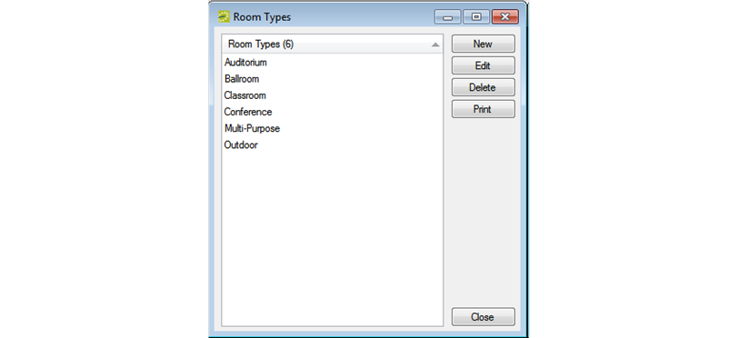

A is the class or category of the room, for example a meeting room, an auditorium, a workspace, a multi-purpose room, and so on. Users can use room types to filter search results.
Room Types Window

Tip: You Can Use "Override" Rooms to Classify Un-Configured Space
An Override Room is used in EMS to loosely define useable space which is not formally configured. For example, a building may have private offices which are not configured as spaces available for public use, but you may need to select such a space for an attendee who is participating remotely in a video conference. In order to provide company employees the ability to schedule meetings in these private rooms, Override Rooms can be configured in EMS.
In the example above, "Override Area 1” can be used repeatedly to serve as a placeholder for any meeting request which will occur in an un-configured space.
For example, on Monday a user makes a reservation for "Override Area 1” and names it "Meeting in Mike Thompson’s Office,” and on Wednesday another user makes a reservation for "Override Area 1” and names it "Meet Guests in Lobby Reception Area Prior to Building Tour” EMS does not track availability for events booked in Override Rooms; however, EMS reports on events that are scheduled in an override room as it would for an event scheduled for any other room.